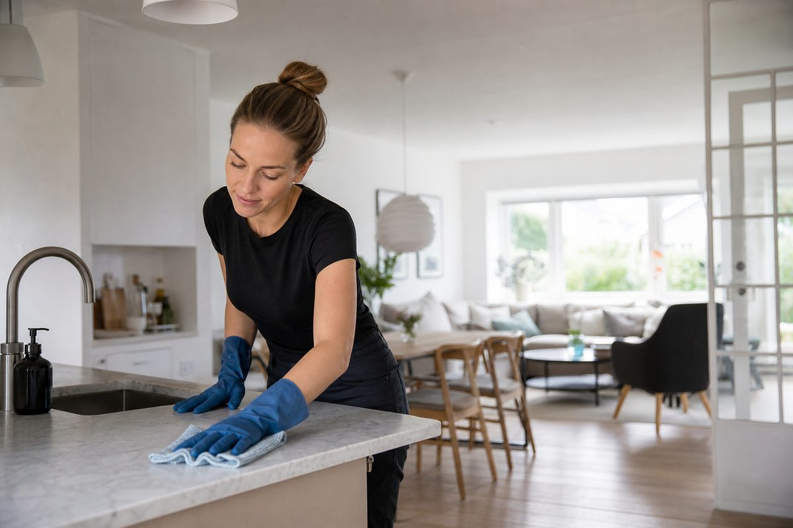

Boligen
Oplys, om boligen er tom eller møbleret. Vi aftaler rum, gulve og tilgængelige flader.
Privat rengøring · Struer og Thyholm
Få hjælp til rengøringen ved ind- eller udflytning. Vi tager udgangspunkt i boligens tilstand og de områder, du ønsker rengjort.
Få et skriftligt tilbudRing 77 17 85 88
Oplys, om boligen er tom eller møbleret. Vi aftaler rum, gulve og tilgængelige flader.
Beskriv sanitet, køkken og eventuel indvendig rengøring af skabe eller apparater.
Vi gennemgår opgaven ud fra den aftalte liste.
Fotos kan sendes til kontakt@hutsol.dk. Formularen kan bruges til en kort beskrivelse.
Aftal nøgleadgang. Fjern ejendele fra de områder, som skal rengøres, og oplys om vand og strøm.
Send oplysninger om opgaven, by og ønsket tidspunkt. Vi afklarer spørgsmål og behov for et besøg.
Du får et skriftligt tilbud. Omfang, pris og adgang aftales, før arbejdet starter.
Vi udfører det aftalte arbejde og gennemgår opgaven ud fra den aftalte liste.
Tilstand, areal, indvendige opgaver og tidsramme indgår i vurderingen. Se gældende priser for private besøg.
Se vores priser. En forespørgsel er ikke en bekræftet booking eller et løfte om, at opgaven kan udføres på to timer.
Oplys, hvad der bliver stående. Adgang til overflader og rum indgår i vurderingen.
Send listen før aftalen. Vi afklarer, hvilke opgaver tilbuddet omfatter.
Nej. Udlejers vurdering og depositum er ikke en del af rengøringsaftalen.
Vi hjælper i Struer, Holstebro, Lemvig og på Thyholm samt nærområder. Fortæl, hvor opgaven er.
Få et skriftligt tilbudRing til os